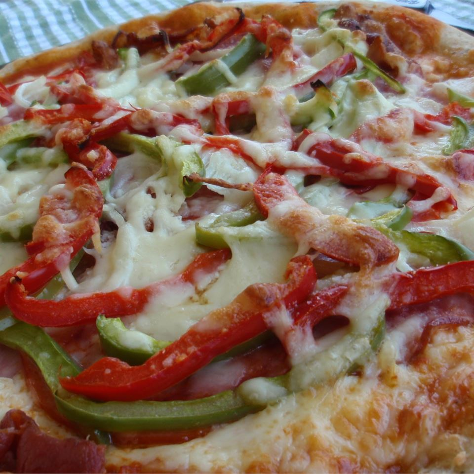

Pizza

Description
A wholesome recipe for the juicest Pizza you have ever had.
Ingredients
- 2 1/4 teaspoons active dry yeast
- 1/2 teaspoon brown sugar
- 1 1/2 cups warm water
- 1 teaspoon salt
- 3 1/3 cups all purpose flour
Steps
- In a large bowl, dissolve the yeast and brown sugar in the water, and let sit for 10 minutes.
- Stir the salt and oil into the yeast solution. Mix in 2 1/2 cups of the flour.
- Preheat oven to 425 degrees F (220 degrees C). If you are baking the dough on a pizza stone, you may place your toppings on the dough, and bake immediately. If you are baking your pizza in a pan, lightly oil the pan, and let the dough rise for 15 or 20 minutes before topping and baking it.
- Bake pizza in preheated oven, until the cheese and crust are golden brown, about 15 to 20 minutes.